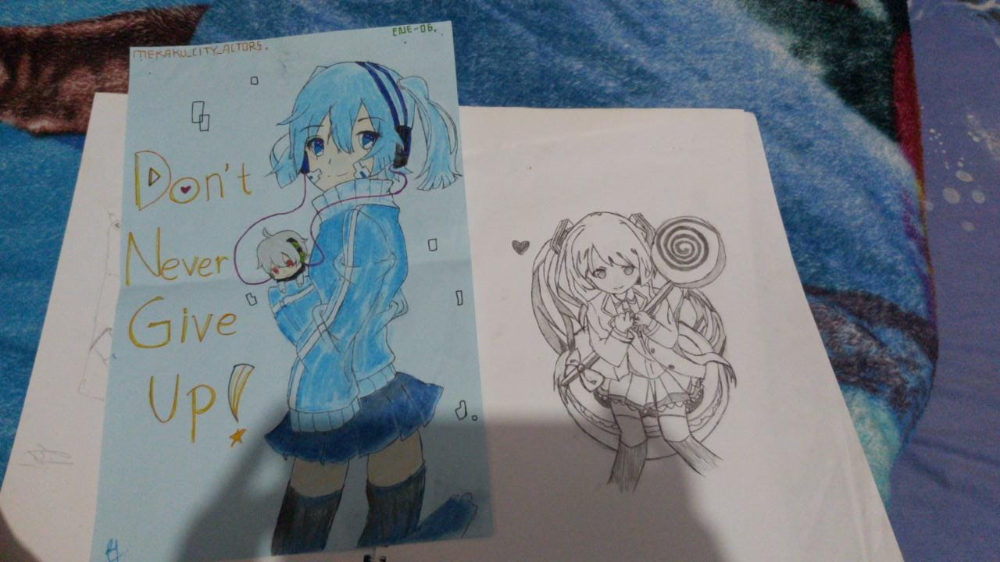
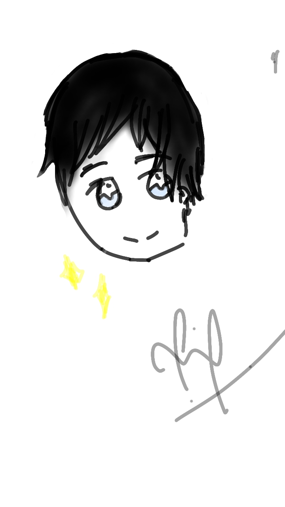
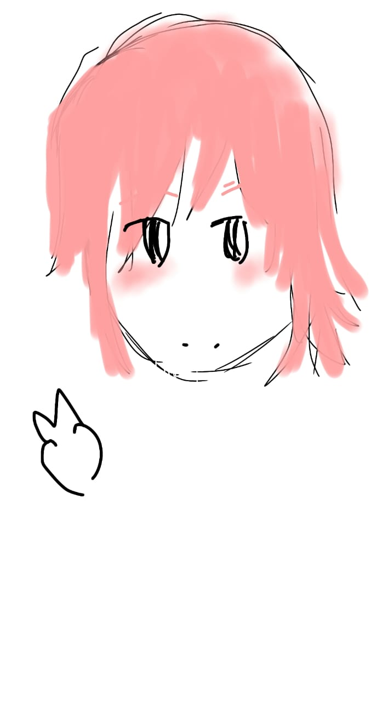
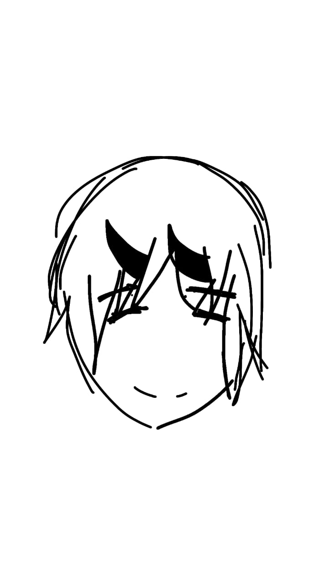

Sebenarnya hobiku banyak, namun salah satu yang paling kusukai ialah
menggambar.
Sejak kelas 4 SD, aku diajari oleh temanku untuk menggambar beberapa
karakter dari anime. Lalu aku menjadi suka, dan terus mengembangkan skill
untuk menggambarku.
Sekarang, aku perlahan mulai berlatih untuk menggambar digital, dan
hasilnya memang masih belum sebagus gambaranku biasanya (drawing art).
Mohon dukungannya, hehe.



